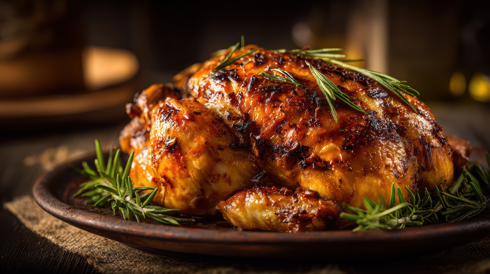

Rotisserie Chicken

Designed by Magnific
Description
One whole chicken cooked with a rotisserie. You can see the ingredient list below
Ingredients
- 1 (3 pound) whole chicken
- 1 pinch salt
- ¼ cup butter, melted
- 1 tablespoon salt
- 1 tablespoon ground paprika
- ¼ tablespoon ground black pepper
Steps
- Preheat an outdoor grill for high heat and lightly oil the grate. Gather all ingredients.
- Season chicken cavity with 1 pinch salt. Tie legs together with kitchen string; tie wings to bird. Secure chicken on a rotisserie attachment.
- Meanwhile, combine butter, 1 tablespoon salt, paprika, and black pepper. Reduce grill temperature to medium; baste chicken with butter mixture. Close the lid.
- Cook on the preheated grill, basting occasionally, until chicken is cooked through and an instant-read thermometer inserted into the thickest part of the thigh, near but not touching the bone, reads 180 degrees F (83 degrees C), 1 to 1 ½ hours.
- Remove chicken from rotisserie; rest for 10 to 15 minutes before carving.
Home